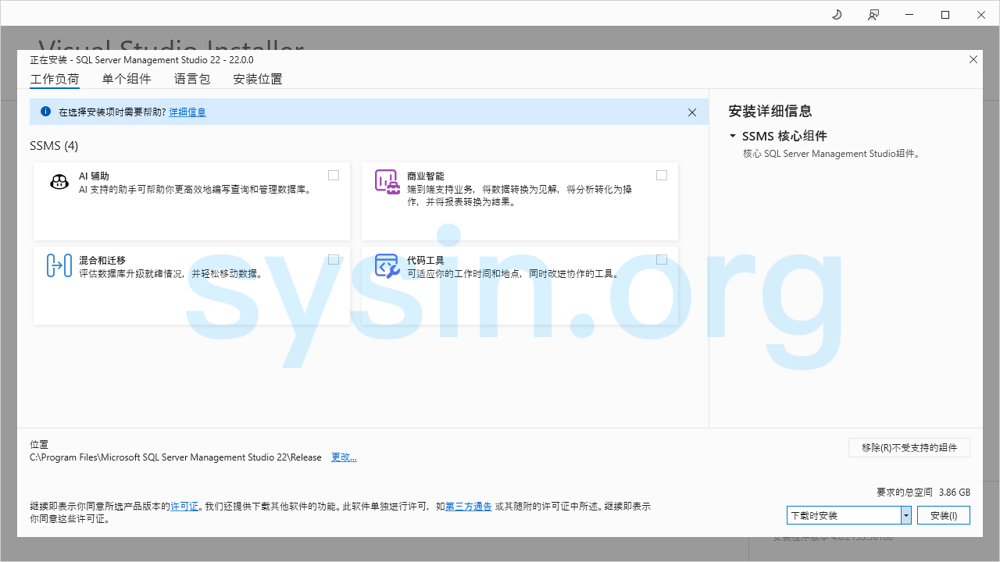

请访问原文链接：SQL Server Management Studio (SSMS) 22.9 - 微软数据库管理工具 查看最新版。原创作品，转载请保留出处。
抄袭是最廉价的捷径，撑不起门面，也遮不住灵魂的不堪。本站的沉默不是默许，是给你留的最后一点体面。
作者主页：sysin.org
笔者注：SQL Server 2014 及之前版本内置 SQL Server Management Studio (SSMS)，SQL Server 2016 及以后版本需要独立安装。

SQL Server Management Studio (SSMS) 是一种集成环境，用于管理从 SQL Server 到 Azure SQL 数据库的任何 SQL 基础结构。SSMS 提供用于配置、监视和管理 SQL Server 和数据库实例的工具 (sysin)。使用 SSMS 部署、监视和升级应用程序使用的数据层组件，以及生成查询和脚本。
使用 SSMS 在本地计算机或云端查询、设计和管理数据库及数据仓库，无论它们位于何处。
对于需要 SSMS 的跨平台助手来管理 SQL 及其他 Azure 数据库的客户，请使用 Azure Data Studio (将停用)。
有关此版本中新增功能的更多详细信息，包括重要安全更改，请参阅 SQL Server Management Studio (SSMS) 的发行说明。
支持的 SQL 产品和服务

此版本的 SSMS 适用于 SQL Server 2014（12.x）及更高版本。它为使用 Azure SQL 数据库、Azure Synapse Analytics 和 Microsoft Fabric 中的最新云功能提供了最重要的支持。
此外，SQL Server Management Studio 21 可与 SSMS 20.x、SSMS 19.x、SSMS 18.x、SSMS 17.x 和 SSMS 16.x 一起安装。
对于 SQL Server Integration Services（SSIS），SSMS 17.x 及更高版本不支持连接到旧版 SQL Server Integration Services 服务 (sysin)。若要连接到旧 Integration Services 的早期版本，请使用与 SQL Server 版本一致的 SSMS 版本。
| SSMS version | 支持的最高 SQL Server 级别 | 支持的旧版 SSIS 服务 |
|---|---|---|
| 16.x | SQL Server 2016 （13.x） | SQL Server 2016 （13.x） |
| 17.x | SQL Server 2017 （14.x） | SQL Server 2017 （14.x） |
| 18.x | SQL Server 2019 （15.x） | SQL Server 2019 （15.x） |
| 19.x, 20.x | SQL Server 2022 （16.x） | SQL Server 2022 （16.x） |
| 21.x | SQL Server 2025 （17.x） | SQL Server 2025 （17.x） |
| 22.x | SQL Server 2025 （17.x） | SQL Server 2025 （17.x） |
例如，使用 SSMS 19.x 或 20.x 连接到旧版 SQL Server 2022（16.x）Integration Services 服务。SSMS 21 和 SSMS 20.x（或更早版本）可以安装在同一台计算机上。自 SQL Server 2012（11.x）发布以来，建议使用 SSIS 目录数据库 SSISDB 来存储、管理、运行和监视 Integration Services 包。
系统要求
以下 64 位作系统支持 SQL Server Management Studio 22：
- Windows 11 最低支持的 OS 版本或更高版本：家庭版、专业版、专业教育版、适用于工作站、企业和教育的专业版。
- Windows 10 最低支持的 OS 版本或更高版本：家庭版、专业版、教育版和企业版。
- Windows Server 2025：标准版和数据中心版。
- Windows Server 2022：标准版和数据中心版。
- Windows Server 2019：标准版和数据中心版。
- Windows Server 2016：标准版和数据中心版。
- 参看：Windows 下载汇总
新增功能
SQL Server Management Studio v22.9.0 - August 12, 2026
- Azure SQL Database
- 更新 Azure SQL Database 的“创建数据库”对话框，将计算和存储选择拆分为独立字段。
- 移除不适用于 Azure SQL Database 的选项。
- 将默认层级更改为 Hyperscale Gen5 2 vCore。
- 连接对话框
- 在默认连接属性视图中添加“证书中的主机名”字段。
- 在浏览 Azure 资源和工作区以及浏览 Fabric 资源时，新增订阅搜索和筛选支持。
- 新增水平布局支持。
- 将“服务器名称”字段更改为可编辑的下拉菜单，以改善键盘辅助功能。
- 将最近使用的连接和收藏连接的最大数量增加至 60 个。
- 新增浏览 Azure 托管实例的支持。
- 为“浏览”选项卡新增搜索和筛选支持。
- 新增连接导入和导出支持。
- Database DevOps（预览版）
- 改进对话框的主题支持，包括“发布”“生成脚本”和“添加数据库引用”对话框。
- 为“添加数据库引用”对话框增加更多引用类型 (sysin)。现在支持四种引用类型：DACPAC、数据库项目、NuGet 包以及系统数据库。
- 更新 SqlProj 文档选项卡名称，移除“
- not connected”后缀。 - 在解决方案资源管理器中新增对架构比较（
.scmp）和发布配置文件（.publish.xml）文件的支持，包括从相应文件类型启动“架构比较”和“发布”。
- 数据库属性
- 新增
TIME_ZONE配置选项。
- 新增
- GitHub Copilot Agent Mode（预览版）
- 新增工具，使 GitHub Copilot 能够与对象资源管理器中已连接的对象进行交互。
- GitHub Copilot Ask Mode
- 更新 Ask 模式的行为，并移除执行任意查询的功能。
- 设置
- 更新启动设置，移除相互冲突的选项并提高清晰度。
- SQL Formatter（预览版）
- 新增使用制表符而非空格进行缩进的功能。
- 新增逗号样式设置，可配置为尾随逗号或前置逗号。
- 新增列别名设置，可选择使用
AS关键字、等号或保持原有样式。 - 新增控制
JOIN关键字之后以及ON关键字之前换行的设置。 - 在 SQL Formatter 设置对话框中新增前后对比预览，可显示示例 T-SQL 在所选设置下的格式化前后效果。
- 移除“Include Semicolons（包含分号）”设置。
- Visual Studio
- 更新至 Visual Studio 18.9.0 [12105.275]。
下载地址
Microsoft SQL Server Management Studio (SSMS) 20.x 简体中文 | 繁體中文 | English
Microsoft SQL Server Management Studio (SSMS) 21.x 简体中文 | 繁體中文 | English
- 百度网盘链接：https://pan.baidu.com/s/10z1rpJiZbtnG4JXBc54SYQ?pwd=bh5h
- 此为离线三合一版本，通过对应的安装程序来安装对应界面语言的版本。
- setup_zh_CN.exe - 简体中文
- setup_zh_TW.exe - 繁體中文
- setup_en_US.exe - English
Microsoft SQL Server Management Studio (SSMS) 22.9.0 (2026-08-12) 简体中文 | 繁體中文 | English
- 百度网盘链接：https://pan.baidu.com/s/1g6q1jL3uxbx7Sjt5bqWk5A?pwd=scpf
- 此为离线三合一版本，通过对应的安装程序来安装对应界面语言的版本。
- setup_zh_CN.exe - 简体中文
- setup_zh_TW.exe - 繁體中文
- setup_en_US.exe - English
相关产品：Microsoft SQL Server 下载汇总
更多：Windows 下载汇总

文章用于推荐和分享优秀的软件产品及其相关技术，所有软件提供免费版或试用版。内容若侵犯了您的版权，请联系作者删除。如果您喜欢这篇文章，或者觉得它对您有所帮助，亦或发现有不当之处；欢迎发表评论，也欢迎分享这个网站，或者赞赏一下，谢谢！提示：捐赠或赞赏属于自愿赠予行为，提交后即表示您对作者的支持与认可。为避免误操作，请在确认前仔细检查金额，支付完成后将无法撤销或退还。
 支付宝赞赏
支付宝赞赏  微信赞赏
微信赞赏赞赏一下
敬请注册！点击 “登录” - “用户注册”（已知不支持 21.cn/189.cn 邮箱）。 请勿使用联合登录（已关闭）。